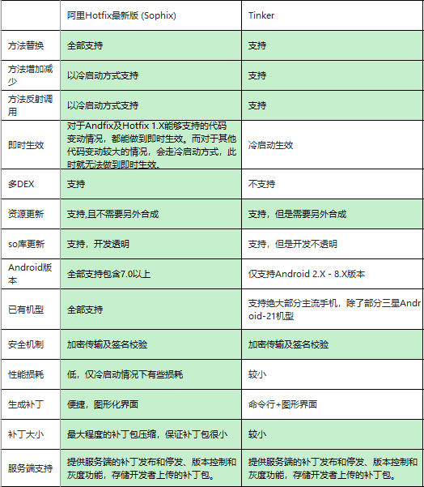

阿里Sophix热更新从入门到应用
1.引言
用户在某些情况下不愿意手动点击更新，同时产品提出公司App做到无感修复更新。综合考虑各大厂商热更新方案，倾向于阿里的Sophix方案，原因如下：
1. so文件替换更新
2. 资源文件替换
3. 尽量可以做到实时修复 Sophix修复方案加分项： ①支持加密传输和签名校验； ②性能损耗低； ③接入开发成本低； ④价格合适。

2、集成准备
2.1 android studio集成
gradle远程仓库依赖, 打开项目找到app的build.gradle文件，添加如下配置：
添加maven仓库地址：
1 | repositories { |
添加gradle坐标版本依赖：
1 | compile 'com.aliyun.ams:alicloud-android-hotfix:3.2.8' |
注意：使用android studio打包生成apk时，要关闭instant run。
2.2 权限
Sophix SDK使用到以下权限
1 | <! -- 网络权限 --> |
READ_EXTERNAL_STORAGE权限属于Dangerous Permissions，仅调试工具获取外部补丁需要，不影响线上发布的补丁加载，调试时请自行做好android6.0以上的运行时权限获取。
2.3 AndroidManifest文件配置
在 AndroidManifest.xml 中间的 application节点下添加如下配置：
1 | <meta-data |
将上述value中的值分别改为通过平台HotFix服务申请得到的App Secret和RSA密钥，出于安全考虑，建议使用setSecretMetaData这个方法进行设置。
另外，热修复暂不支持EMAS统一插件的json文件读取。